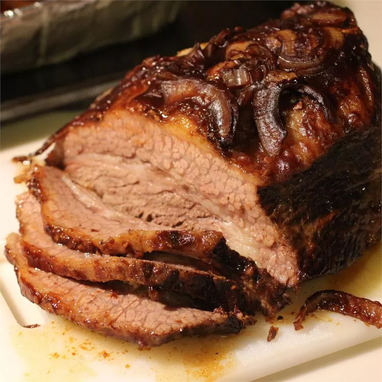

Home
Blackjack Brisket

Description
This is a special recipe bar-b-ue brisket that is slow cooked in the ove. Enjoy, this can be cooked outdoors on pit if preferred.
Ingredients
- untrimmed beef brisket
- beer
- large onion
- minced garlic
- salt
- barbeque sauce
- blackstrap molasses
- liquid smoke flavoring
Steps
- preheat the oven to 120℃.
- Place brisket in a large roasting pan. Pour beer over the meet, and place onion sections on top. Season with garlic, salt and pepper. Combine the barbeque sauce, molasses and liquid smoke.
- Place pan on the center rack of the preheated oven, and bak for 6 to 8 hours or until beef is fork tender. Remove from the oven and let stand for about 10 minutes before slicing across the grain.